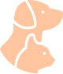

История компании начинается 14 января 1999 года, когда
было образовано ООО «Чижи». Идея пришла, т.к. у
основателя компании Прозор Жанны Георгиевны была
собака боксёр по кличке Бард… Читать далее >
Мы готовы в любое время суток принять домашних питомцев и их хозяев
Широкий спктр услуг
Кроме широкопрофильных докторов в клинике развиты узкие направления в ветеринарии – офтальмология, стоматология, дерматология, травматология, ортопедия и онкология

Большой опыт
30 высококвалифицированных врачей нашей клиники предоставляют ветеринарную помощь уже на протяжении 18 лет!
Собственная лаборатория
Оборудованная профессиональным оснащением производства компании IDEXX International Inc.(США), которое позволяет получить результаты исследования прямо на приеме
Оснащенные стационары
Обычный и инфекционный стационар с индивидуальным подогревом каждой клетки. Для питомцев в критическом состоянии предусмотрены кислородные камеры
Новейшее оборудование
Помимо лабораторного оборудования и цифрового рентгена в клинике используется современный эндоскоп KARL STORZ
Запись на прием онлайн
Запись на приём позволяет избежать ожиданий в очереди, но если вы не можете приехать - мы выезжаем на дом!
Аптека и зоомагазин
Для удобства в клинике предусмотрен аптечный пункт, а также бутик с одеждой и косметическими средствами для ухода за домашними любимцами
Груминг-салон
Отдельный кабинет для проведения гигиенческих и косметических процедур, таких как мытьё и сушка, стрижка или тримминг, уход за ушами, глазами и когтями и многое другое


 +7 (8442) 96 22 92
+7 (8442) 96 22 92